# 向量和线性代数
# 向量
# 向量的定义
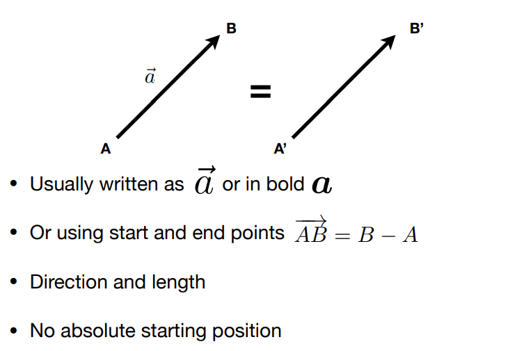
# 向量的归一化
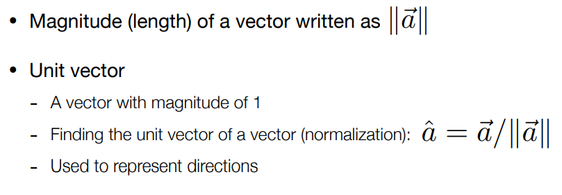
# 向量的加法
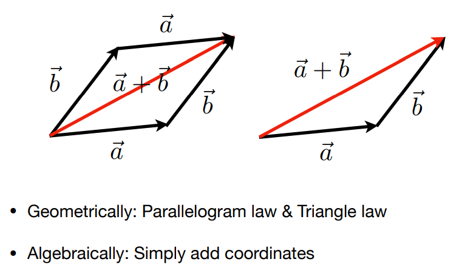
# 笛卡尔坐标系
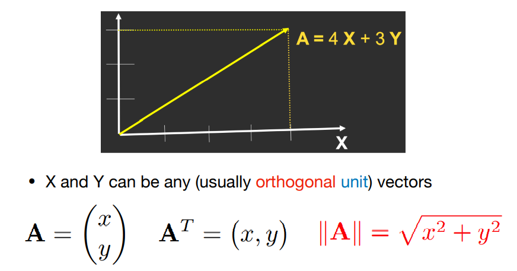
# 向量的乘法
# 向量的点乘（Dot Product）
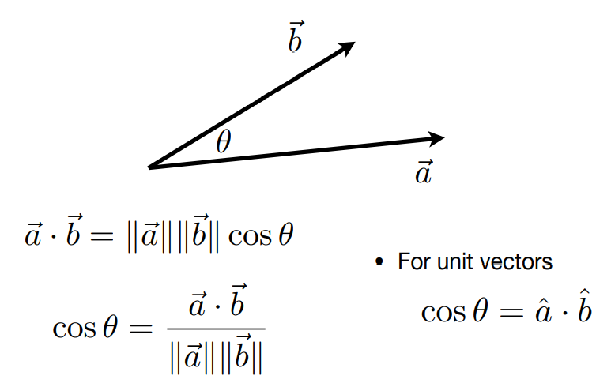
点乘的性质
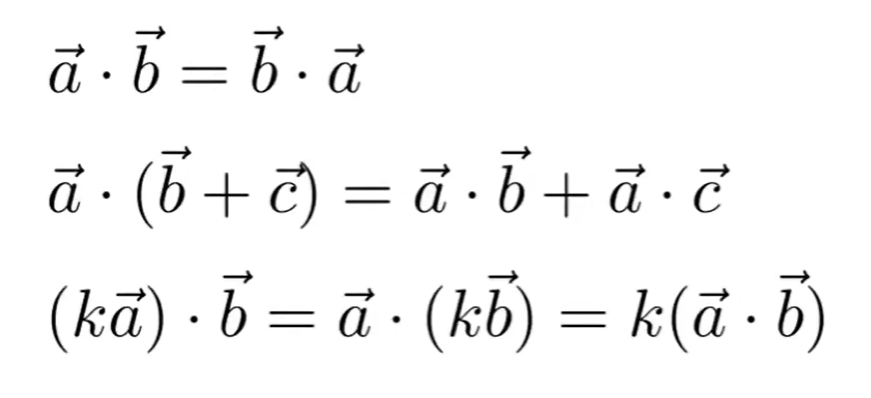
# 笛卡尔坐标系中的点乘
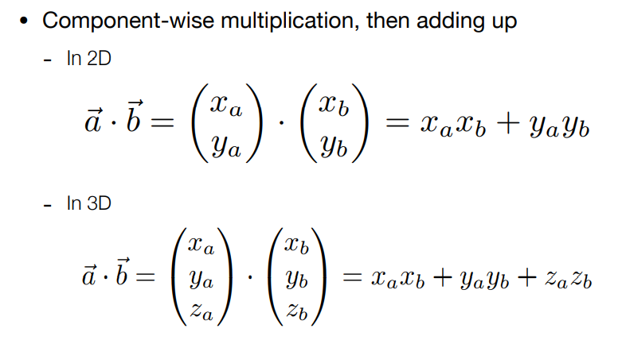
# 向量点乘在图形学中的应用
- 找到两个方向之间的夹角，在光照模型中，直到入射光的方向和物体表面的法线还有观察的方向，这些方向之间的夹角都是通过点乘来计算的。
- 能找得到一个向量投影在另一个向量上的向量。
# 投影
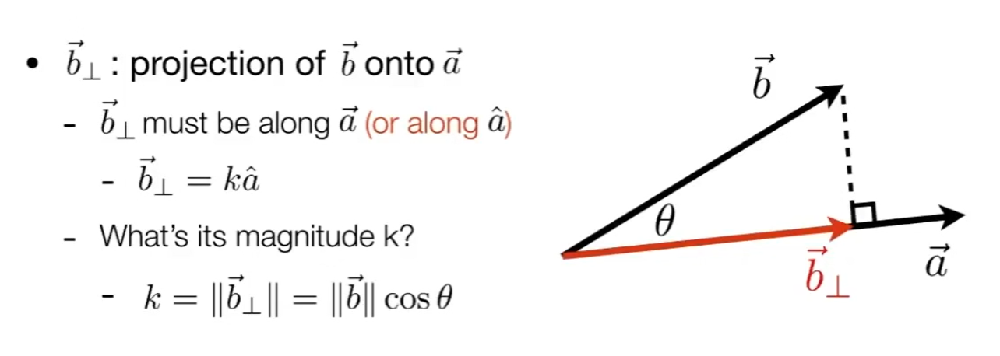
# 向量的点乘所带来的好处
- 判断两个向量在方向上有多么接近
- 将一个向量分解为互相垂直的两个向量
- 判断向量的方向性，通过将点乘的结果与 0 做对比
# 向量的叉乘（Cross Product）
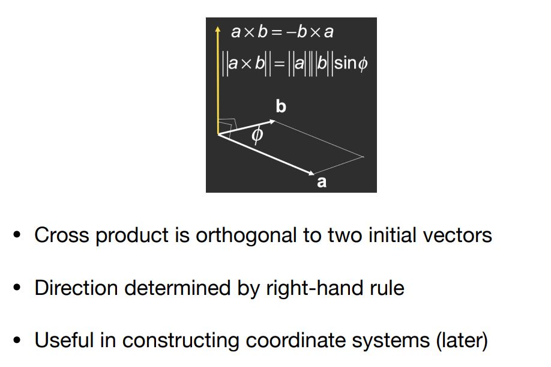
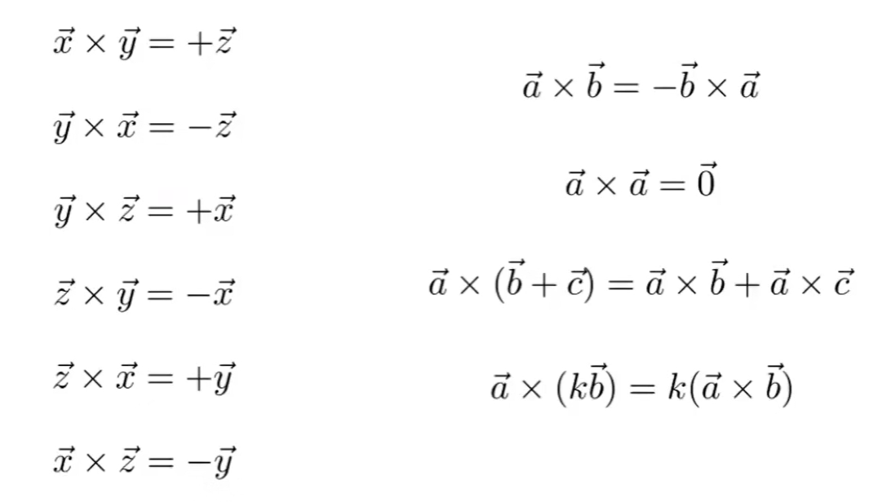
以上为右手坐标系的结果。
# 笛卡尔坐标系中的叉乘
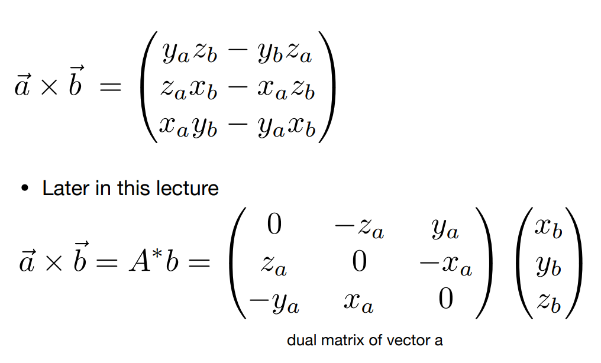
# 向量叉乘在图形学中的应用
- 判定两个向量之间的左右关系。
- 判定一个点是在三角形的内侧还是外侧。
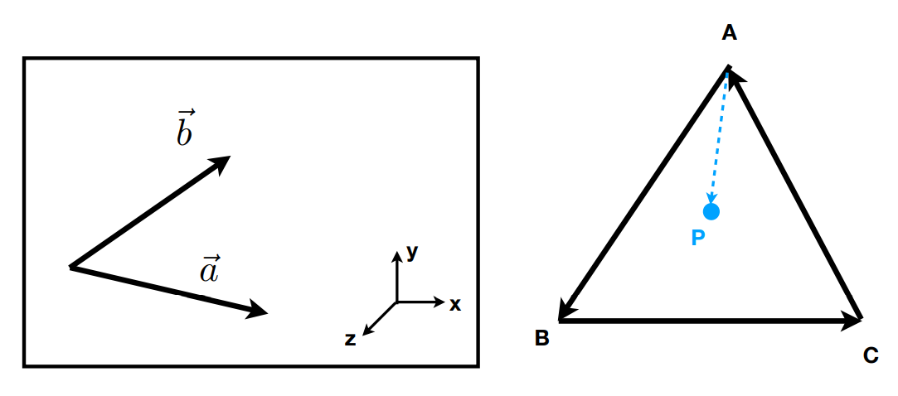
# 正交坐标系
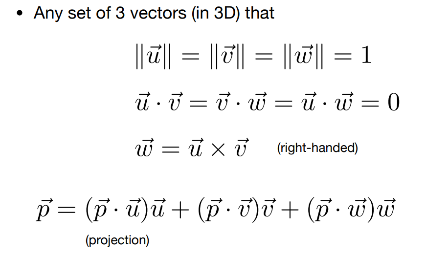
# 矩阵
在图形学中，矩阵被广泛的应用在各种变换上，例如移动、旋转、缩放和侧切（Translation、rotaion、scale、shear）。
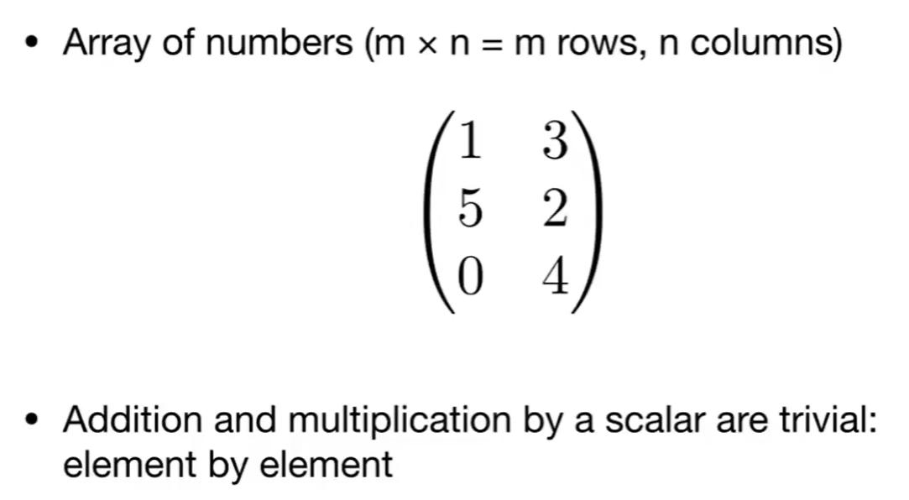
# 矩阵的乘积
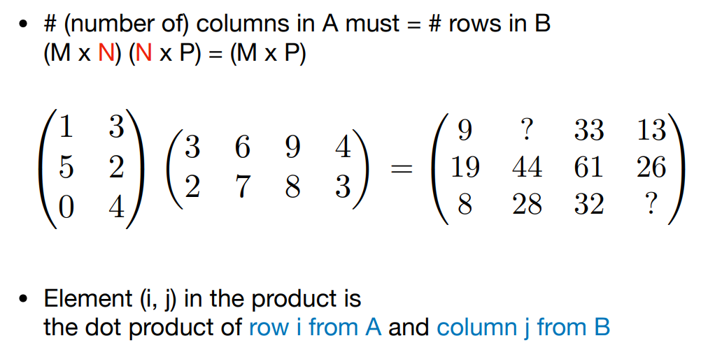
# 矩阵的性质
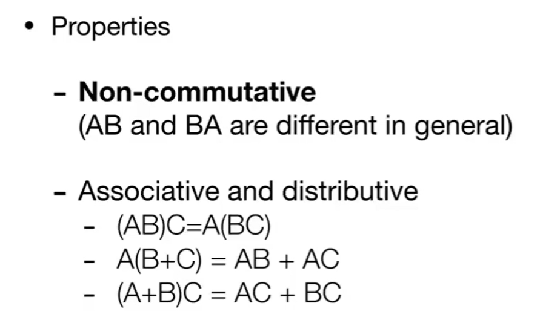
# 矩阵的转置
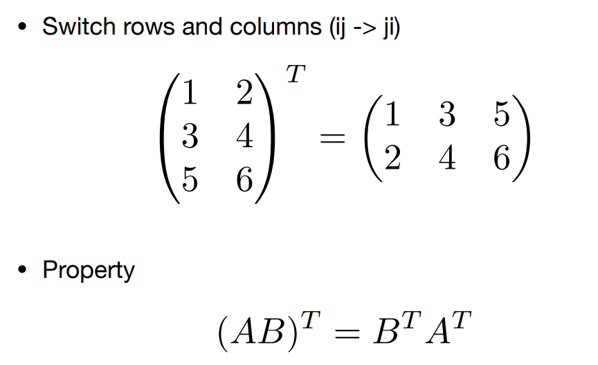
# 单位矩阵和矩阵的逆
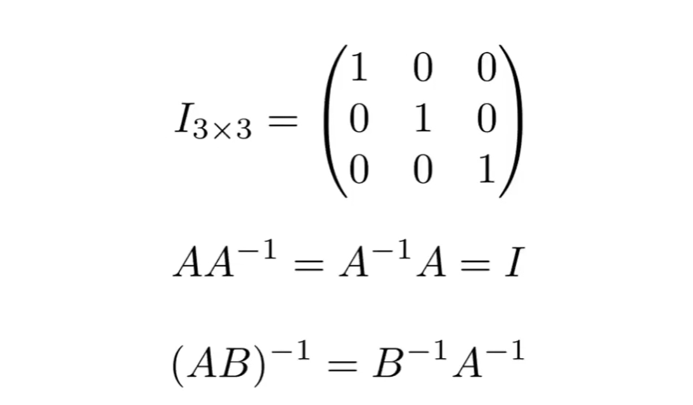
# 将向量的乘积写成矩阵形式
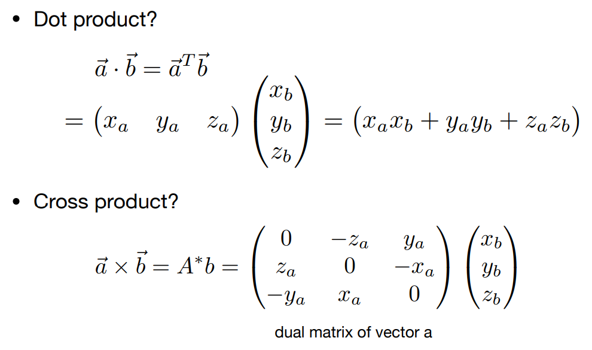